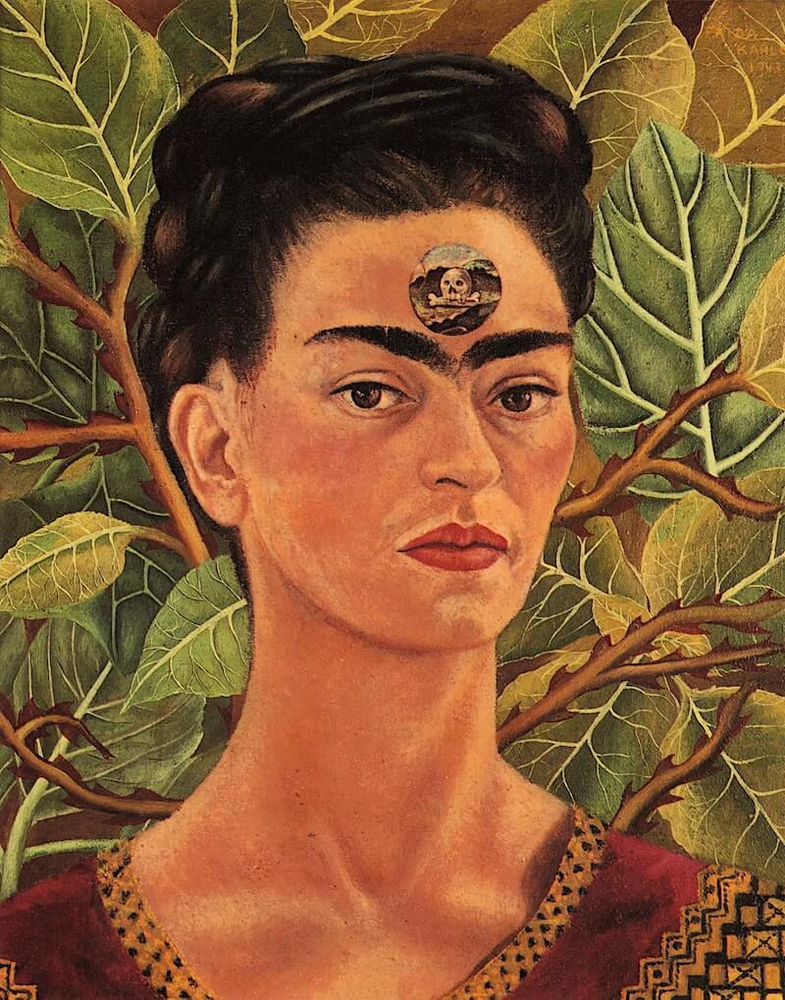
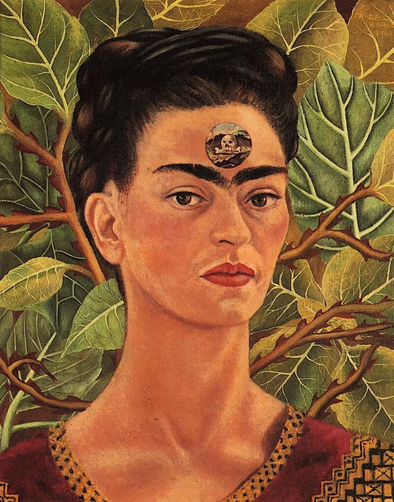

Фрида Кало Магдалена Кармен Фрида Кало
е мексиканска художничка, представителка на т. нар. „ наивистично изкуство “, известна с
непокорния си дух и неконвенционалния си стил както в изкуството, така и в личния си
живот. Нейният живот е белязан от нещастието да се зарази от полиомиелит и по-късно от
сериозна катастрофа през младежките ѝ години, които я приковават на легло в
продължение на дълги периоди от време, подлагайки я на 32 операции. Тематиката в
нейното изкуство се върти около нейната биография и собственото ѝ страдание. Тя е автор
на 200 творби, предимно автопортрети.
(1907-1954г.)
Фрида Кало
Творби
1.
 2.
2.
 3.

4.
3.

4.